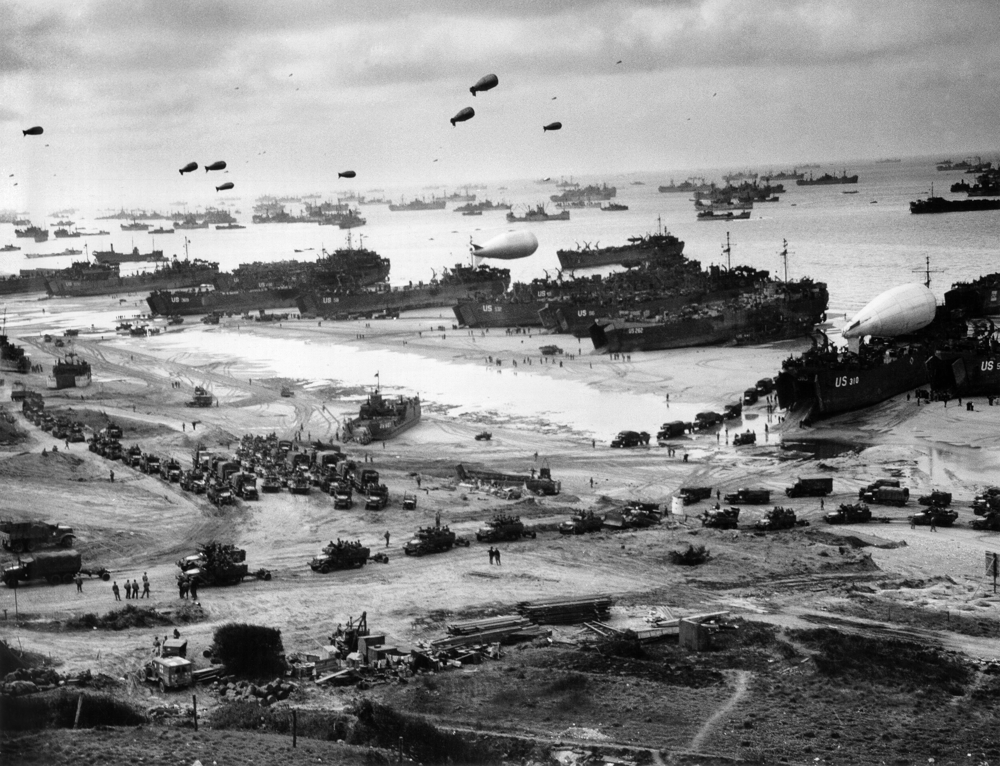

Pendahuluan
Perang Dunia II adalah konflik global yang berlangsung dari tahun
1939 hingga 1945. Di Eropa, perang dimulai dengan invasi
Jerman ke Polandia dan berakhir dengan kekalahan Nazi Jerman pada Mei
1945.
Peristiwa Utama
1. Invasi Polandia (1939)

Pada 1 September 1939, Jerman Nazi di bawah pimpinan
Adolf Hitler melancarkan serangan terhadap Polandia dengan
strategi Blitzkrieg (perang kilat). Serangan ini dilakukan dengan
gabungan serangan udara dari Luftwaffe (Angkatan Udara Jerman),
serangan tank dari Wehrmacht
(Angkatan Darat Jerman), dan pasukan infanteri yang bergerak cepat.
Dua hari setelah invasi ini, pada 3 September 1939, Inggris dan
Prancis menyatakan perang terhadap Jerman. Namun, Polandia jatuh ke
tangan Jerman dalam waktu kurang dari satu bulan. Pada
17 September 1939, Uni Soviet juga menyerang Polandia dari timur
sesuai perjanjian Molotov-Ribbentrop dengan Jerman. Polandia
akhirnya menyerah pada 6 Oktober 1939, dan wilayahnya dibagi
antara Jerman dan Uni Soviet.
2. Kejatuhan Prancis (1940)
Setelah menguasai Polandia, Jerman mengalihkan perhatiannya ke Eropa
Barat. Pada
10 Mei 1940, Jerman menyerang Prancis melalui Belgia, Belanda,
dan Luksemburg menggunakan taktik Blitzkrieg.
Dalam waktu enam minggu, pasukan Jerman mencapai Paris. Pada
14 Juni 1940, Paris jatuh ke tangan Jerman, dan pada
22 Juni 1940, Prancis menandatangani perjanjian menyerah di
Compiègne.
3. Pertempuran Britania (1940-1941)
Dengan jatuhnya Prancis, Jerman berencana menaklukkan Inggris dalam
Operasi Sea Lion. Namun, sebelum melakukan invasi darat, Jerman
harus menguasai udara terlebih dahulu dalam Battle of Britain.
Dengan bantuan teknologi radar dan pesawat tempur seperti
Spitfire dan Hurricane, Inggris berhasil menggagalkan
rencana Jerman. Pada 31 Oktober 1940, Jerman menghentikan
serangan udara mereka, dan Inggris meraih kemenangan.
4. Operasi Barbarossa (1941)

Pada 22 Juni 1941, Jerman melancarkan Operasi Barbarossa,
yaitu invasi besar-besaran terhadap Uni Soviet. Serangan ini menjadi
operasi militer terbesar dalam sejarah.
Pasukan Jerman bergerak dalam tiga arah utama:
- Utara: Menuju Leningrad (sekarang Saint Petersburg)
- Tengah: Menuju Moskow
- Selatan: Menuju Stalingrad
Meskipun awalnya sukses, musim dingin Rusia yang sangat dingin dan
perlawanan sengit dari Tentara Merah menyebabkan kegagalan operasi ini.
Uni Soviet mulai melakukan serangan balik terhadap Jerman.
5. Pendaratan Normandia (1944)

Pada 6 Juni 1944, Sekutu melancarkan Operasi Overlord,
yaitu invasi besar-besaran ke pantai Normandia, Prancis. Peristiwa ini
dikenal sebagai D-Day.
Pasukan Sekutu yang terdiri dari Amerika Serikat, Inggris, Kanada, dan
lainnya mendarat di beberapa pantai utama, termasuk Omaha,
Utah, Gold, Juno, dan Sword. Setelah
pertempuran sengit, mereka berhasil merebut kembali wilayah Prancis dari
Jerman.
6. Kejatuhan Berlin dan Akhir Perang (1945)
Pada awal tahun 1945, pasukan Sekutu dari barat dan Uni Soviet dari
timur semakin mendekati Jerman.
Pertempuran Berlin dimulai pada 16 April 1945.
Pada 30 April 1945, Adolf Hitler bunuh diri di bunker bawah
tanahnya di Berlin. Dua hari kemudian, Berlin jatuh ke tangan Uni
Soviet. Akhirnya, pada 8 Mei 1945, Jerman menyerah tanpa syarat,
menandai akhir dari Perang Dunia II di Eropa.
Dampak Perang
- Lebih dari 50 juta orang tewas di seluruh dunia.
- Eropa mengalami kehancuran besar-besaran.
-
Jerman dibagi menjadi dua: Jerman Barat dan Jerman Timur.
-
Pembentukan Perserikatan Bangsa-Bangsa (PBB) untuk mencegah
perang serupa.
Kesimpulan
Perang Dunia II di Eropa adalah konflik besar yang mengubah sejarah
dunia. Peristiwa ini mengarah pada runtuhnya Nazi Jerman, pembagian
Eropa, dan lahirnya era Perang Dingin.